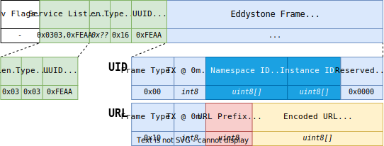

Overview
"A Physical Thing is an abstraction of a physical entity that provides interactions to and participates in the Web of Things"
- W3C Web of Things (WoT) Thing Description 1.1
Problem Statement
"How to discover and track Physical Things indoors?"
Table of Contents
- Related Work and Specifications
- SemBeacon Solution
- Demonstrator and Supplemental Material
- Conclusions and Future Work
Related Work
- HP CoolTown Beacon (2000)
BLE Specifications

BLE Specifications ...

BLE Specifications ...

SemBeacon Solution

SemBeacon Solution ...
BLE 4.X

SemBeacon Solution ...
Flags
| Bit (MSB) | Description | Example |
|---|---|---|
| 0 | Indicates if the beacon has a position. | 0 = Unsure, 1 = Yes |
| 1 | Indicates if the beacon is private. | 0 = Public, 1 = Private |
| 2 | Indicates if the beacon is attached to a moving object. | 0 = No, 1 = Yes |
| 3 | Indicates if the beacon has a positioning system. | 0 = No, 1 = Yes |
| 4 | Indicates if the beacon has telemetry data. | 0 = No, 1 = Yes |
| 5 - 7 | Reserved for future use. |
SemBeacon Solution ...
Namespace and Instance Identifier

SemBeacon Solution ...
BLE 5.X (Work in Progress)

SemBeacon Solution ...
Ontology and POSO Extension
Demonstrator
 - M. Van de Wynckel & B. Signer, OpenHPS Single Floor Dataset (2021)
- M. Van de Wynckel & B. Signer, OpenHPS Single Floor Dataset (2021)
Demonstrator ...
https://sembeacon.org/examples/openhps2021/beacons.ttl
:pl9_3_lobby_1 a schema:Place, ssn:Deployment, sosa:FeatureOfInterest, ogc:SpatialObject;
ogc:hasGeometry [
a ogc:Geometry;
ogc:asWKT "POLYGON Z((4.392281317197596 50.82061024217639 92, 4.39223788808538 50.82065085654958 92, 4.392153959019106 50.82061503844629 92, 4.392197388204323 50.8205744240731 91.99999999906868, 4.392281317197596 50.820610242176386 94.99999999906868, 4.392237888085379 50.82065085654958 95, 4.392153959019106 50.82061503844629 95, 4.392197388204322 50.8205744240731 94.99999999906868, 4.392281317197596 50.82061024217639 92))"^^ogc:wktLiteral;
ogc:coordinateDimension 3;
ogc:spatialDimension 3;
ogc:dimension 3
];
rdfs:label "Lobby #1";
dcmi:created "2023-06-22T21:12:23.585Z"^^xsd:dateTime.
:pl9_3_lobby_2 a schema:Place, ssn:Deployment, sosa:FeatureOfInterest, ogc:SpatialObject;
ogc:hasGeometry [
a ogc:Geometry;
ogc:asWKT "POLYGON Z((4.392530671545053 50.820691696024596 92, 4.392512343770305 50.82070883604012 92.00000000093132, 4.392448113920621 50.820681425129145 92, 4.392466441718948 50.820664285113615 91.99999999906868, 4.392530671545053 50.820691696024596 95, 4.3925123437703055 50.82070883604012 95.00000000093132, 4.392448113920621 50.820681425129145 94.99999999906868, 4.392466441718948 50.82066428511362 95.00000000093132, 4.392530671545053 50.820691696024596 92))"^^ogc:wktLiteral;
ogc:coordinateDimension 3;
ogc:spatialDimension 3;
ogc:dimension 3
];
rdfs:label "Lobby #2";
dcmi:created "2023-06-22T21:12:23.586Z"^^xsd:dateTime.
:BEACON_08 a sosa:FeatureOfInterest, ogc:SpatialObject, poso:RFLandmark, poso:BluetoothBeacon, sembeacon:SemBeacon;
rdfs:label "BEACON_08";
dcmi:created "2023-06-22T21:12:23.637Z"^^xsd:dateTime;
poso:hasPosition [
a geo:Point, poso:AbsolutePosition;
ogc:asWKT "POINT Z(4.392253994600526 50.82057562786381 93.5999999962747)"^^ogc:wktLiteral;
ogc:coordinateDimension 3;
ogc:spatialDimension 3;
ogc:dimension 3;
dcmi:created "2023-06-22T21:12:23.638Z"^^xsd:dateTime;
schema:latitude "50.82057562786381"^^xsd:double;
schema:longitude "4.392253994600526"^^xsd:double;
schema:elevation "93.5999999962747"^^xsd:double
];
posoc:hasReferenceRSSI [
a poso:RelativeSignalStrength;
poso:hasRSS [
a qudt:QuantityValue;
qudt:unit unit:DeciB_M;
qudt:numericValue -56
];
poso:hasRelativeDistance [
a qudt:QuantityValue;
qudt:unit unit:M;
qudt:numericValue 1
]
];
hardware:macAddress "f7:5c:38:a4:45:ec";
ogc:sfWithin :pl9_3_corridor;
sembeacon:namespace :pl9_3;
sembeacon:shortResourceURI "https://bit.ly/3JsEnF9"^^xsd:anyURI;
sembeacon:instanceId "c187d748"^^xsd:hexBinary.
Example
@prefix : <http://sembeacon.org/example.ttl#> .
@prefix hardware: <http://w3id.org/devops-infra/hardware#> .
@prefix poso: <http://purl.org/poso/> .
@prefix posoc: <http://purl.org/poso/common/> .
@prefix sembeacon: <http://purl.org/sembeacon/> .
@prefix qudt: <http://qudt.org/schema/qudt/> .
@prefix unit: <http://qudt.org/vocab/unit/> .
:building_a a ssn:Deployment ;
rdfs:label "Building A" ;
sembeacon:namespaceId "e19c5e1ed6a14d..."^^xsd:hexBinary .
:room_a1_2 a sembeacon:SemBeacon ;
rdfs:label "SemBeacon Room A1.2"@en ;
rdfs:isDefinedBy <http://sembeacon.org/example.ttl#> ;
sembeacon:namespace :building_a ;
sembeacon:instanceId "beac0101"^^xsd:hexBinary ;
hardware:mac "00:11:22:33:44:55" ;
posoc:referenceRSSI [ # Reference RSSI is a ...
# ... factory calibrated signal strength
poso:hasRSS [
qudt:unit unit:DeciB_M ; qudt:numericValue -56 ] ;
# ... measured at a specific distance
poso:hasRelativeDistance [
unit:Meter ; qudt:value "1.0"^^xsd:double ] .
] ;
poso:hasPosition [ a poso:AbsolutePosition ;
poso:hasAccuracy [ ... ] ; poso:xAxisValue [ ... ] ;
poso:yAxisValue [ ... ] ; poso:zAxisValue [ ... ] ] .
Conclusion and Future Work
- We presented SemBeacon
![](data:image/svg+xml,%3Csvg%20xmlns%3D%22http%3A%2F%2Fwww.w3.org%2F2000%2Fsvg%22%20viewBox%3D%220%200%2037%2037%22%20shape-rendering%3D%22crispEdges%22%3E%3Cpath%20fill%3D%22%23ffffff%22%20d%3D%22M0%200h37v37H0z%22%2F%3E%3Cpath%20stroke%3D%22%23000000%22%20d%3D%22M4%204.5h7m1%200h4m4%200h2m2%200h1m1%200h7M4%205.5h1m5%200h1m1%200h1m1%200h2m2%200h1m1%200h3m1%200h1m1%200h1m5%200h1M4%206.5h1m1%200h3m1%200h1m2%200h2m1%200h1m2%200h3m4%200h1m1%200h3m1%200h1M4%207.5h1m1%200h3m1%200h1m1%200h1m3%200h3m1%200h1m1%200h2m2%200h1m1%200h3m1%200h1M4%208.5h1m1%200h3m1%200h1m1%200h2m1%200h8m3%200h1m1%200h3m1%200h1M4%209.5h1m5%200h1m1%200h2m1%200h1m1%200h7m2%200h1m5%200h1M4%2010.5h7m1%200h1m1%200h1m1%200h1m1%200h1m1%200h1m1%200h1m1%200h1m1%200h7M13%2011.5h1m1%200h1m3%200h1m4%200h1M7%2012.5h1m2%200h1m3%200h5m2%200h1m5%200h3m1%200h2M5%2013.5h1m2%200h2m1%200h1m1%200h2m5%200h2m1%200h4m2%200h1m2%200h1M4%2014.5h7m3%200h1m1%200h1m1%200h2m1%200h2m1%200h1m1%200h1m3%200h2M6%2015.5h3m3%200h1m1%200h1m2%200h2m1%200h1m4%200h4m1%200h2M5%2016.5h1m3%200h2m1%200h1m4%200h2m2%200h4m1%200h2M5%2017.5h1m1%200h3m1%200h1m1%200h1m3%200h2m3%200h4m1%200h1m1%200h1m1%200h1M10%2018.5h2m3%200h1m2%200h2m2%200h1m1%200h2m5%200h2M4%2019.5h1m1%200h3m3%200h1m1%200h1m7%200h1m3%200h2M4%2020.5h2m2%200h1m1%200h1m1%200h2m1%200h1m5%200h1m1%200h3m5%200h1M5%2021.5h1m1%200h1m3%200h1m1%200h2m1%200h2m1%200h3m1%200h2m1%200h1m2%200h4M4%2022.5h1m1%200h2m1%200h2m2%200h1m2%200h1m3%200h1m4%200h1m3%200h1m1%200h2M6%2023.5h1m1%200h1m4%200h2m1%200h4m1%200h1m1%200h2m3%200h2m2%200h1M4%2024.5h1m5%200h2m1%200h1m6%200h1m3%200h5m1%200h3M12%2025.5h1m1%200h1m1%200h3m2%200h2m1%200h1m3%200h1m2%200h2M4%2026.5h7m3%200h4m4%200h1m1%200h1m1%200h1m1%200h4M4%2027.5h1m5%200h1m3%200h5m1%200h2m2%200h1m3%200h1m1%200h3M4%2028.5h1m1%200h3m1%200h1m2%200h4m1%200h1m1%200h2m2%200h6m2%200h1M4%2029.5h1m1%200h3m1%200h1m1%200h2m3%200h2m1%200h2m1%200h4m1%200h3m1%200h1M4%2030.5h1m1%200h3m1%200h1m2%200h1m2%200h4m3%200h2m3%200h3m1%200h1M4%2031.5h1m5%200h1m2%200h1m1%200h2m6%200h3m1%200h1m3%200h1M4%2032.5h7m2%200h3m2%200h1m2%200h2m1%200h1m1%200h1m1%200h2m1%200h1%22%2F%3E%3C%2Fsvg%3E%0A)